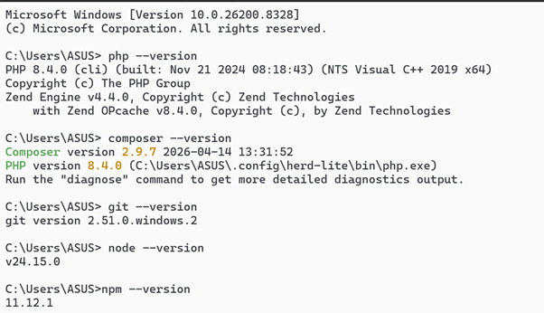
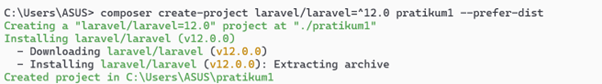
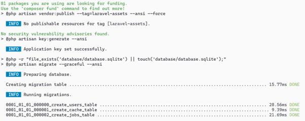
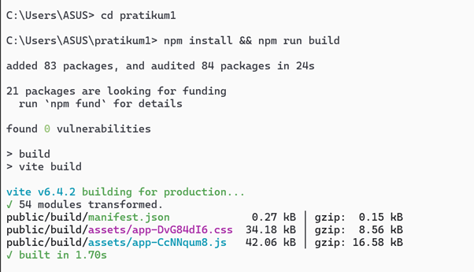
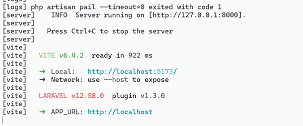
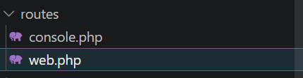
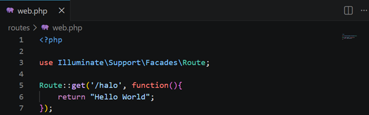
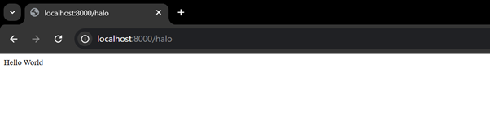

Tiara Azizah | Informatika 24
Laravel merupakan salah satu framework PHP berbasis open-source yang paling populer saat ini. Dikembangkan oleh Taylor Otwell, framework ini menggunakan arsitektur MVC (Model-View-Controller) yang dirancang untuk meningkatkan produktivitas pengembang melalui sintaks yang ekspresif dan elegan. Praktikum ini bertujuan untuk membekali mahasiswa dengan keterampilan dasar dalam mempersiapkan lingkungan pengembangan hingga menjalankan aplikasi web sederhana menggunakan Laravel.
Memastikan seluruh perangkat lunak pendukung telah terkonfigurasi dengan benar melalui terminal. Pengecekan versi PHP, Composer, dan Node.js:
php --version
composer --version
node --version
Gambar 1: Cek versi PHP dan Composer
Membuat proyek Laravel baru dengan Composer:
composer create-project laravel/laravel pratikum1Kemudian menginstal aset front-end:
npm install && npm run build

Gambar 2: Proses pembuatan proyek Laravel
Menjalankan aplikasi melalui Artisan Console:
php artisan serveServer akan berjalan di http://127.0.0.1:8000.


Gambar 3: Tampilan terminal saat server aktif
Membuka file routes/web.php menggunakan VS Code:
code .
Menambahkan route sederhana:
Route::get('/halo', function(){
return "Hello World";
});
Setelah disimpan, akses http://localhost:8000/halo di browser:

Gambar 4: Tampilan "Hello World"
Praktikum ini berhasil membuktikan bahwa Laravel memberikan kemudahan dalam manajemen proyek web melalui fitur-fitur otomatisasinya. Pemahaman mengenai alur kerja Artisan dan struktur routing merupakan fondasi krusial bagi mahasiswa untuk melangkah ke tahap pengembangan aplikasi yang lebih kompleks, seperti integrasi database menggunakan Eloquent ORM.